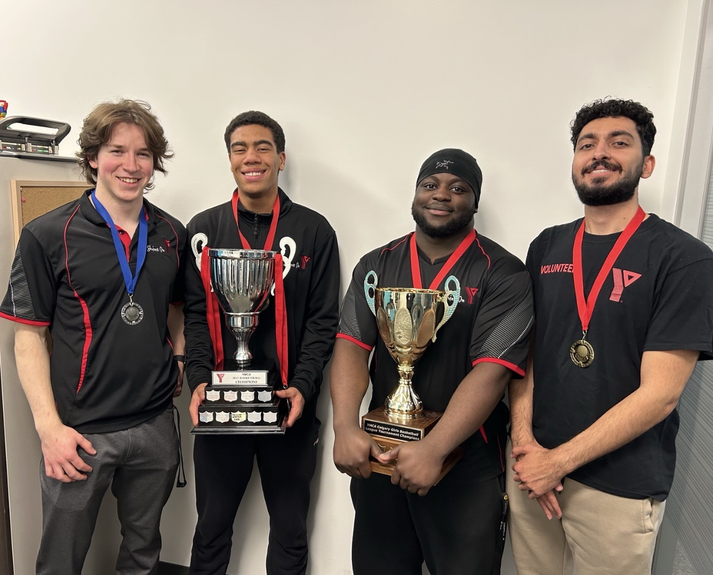

Rooted in service,
driven by impact
I am a University of Calgary student in Exercise and Health Physiology, an Emergency Medical Responder, and a researcher passionate about health equity, leadership, and meaningful community impact.
My journey has been shaped by a desire to understand people deeply, serve with intention,
and contribute to systems that help individuals and communities thrive.

Education
I am currently completing a Bachelor of Science in Exercise and Health Physiology at the University of Calgary, with a minor in Health and Society. My academic journey has strengthened my interest in human performance, health systems, and the broader social realities that influence well-being. In 2025, I also completed Emergency Medical Responder training through the Alberta Health and Safety Training Institute, which added a practical clinical dimension to the way I understand care.
Research & Inquiry
Research has become one of the most meaningful parts of my development. It has taught me how to ask better questions, how to work through complexity, and how to connect evidence with real human experiences. My work has included research related to health disparities and vulnerable populations. These opportunities have strengthened my interest in understanding not only what health outcomes look like, but why they happen and what can be done to change them.
I am especially interested in work that does not stop at description, but moves toward action. I care about research that informs better decisions, stronger communities, and more equitable systems. For me, inquiry is not just about generating knowledge. It is about using knowledge responsibly.
Leadership & Community Work
Leadership has been one of the clearest threads throughout my journey. I have had the opportunity to help lead initiatives that bring students together, create space for meaningful dialogue, and push important conversations forward. As Co-Founder and Co-President of Health Equity for All, I have helped build a student-led platform centered on health advocacy, systemic barriers, and equity-focused engagement. That work reflects a belief I hold strongly: students should not only learn about the world, but also participate in shaping it.
I have also held leadership and mentorship roles in spaces focused on youth engagement, student life, and community building. These experiences have shown me that leadership is not only about visibility. It is about consistency, humility, and a willingness to do the work that allows others to grow and contribute meaningfully.
Clinical Experience
Working as an Emergency Medical Responder has deepened my understanding of care in a way that no classroom alone could. It has required me to remain calm under pressure, communicate clearly, and make decisions that prioritize patient well-being in dynamic environments. It has also reminded me that healthcare is deeply human. People remember not only what is done for them, but how they are made to feel in vulnerable moments.
This clinical experience continues to shape the way I think about healthcare, responsibility, and the kind of professional I hope to become. It has strengthened both my respect for frontline care and my motivation to keep growing in spaces where service and knowledge meet.
Selected Experiences
Emergency Medical Responder, Medavie Health Services West
Providing frontline care, conducting assessments, monitoring patients, and supporting continuity of care in fast-paced clinical settings.
Research Coordinator & Global Connect Fellow, Alberta Council for Global Cooperation
Contributing to collaborative research and dialogue on global development, youth leadership, and the Sustainable Development Goals.
Co-Founder & Co-President, Health Equity for All
Helping build a student-led organization focused on advocacy, policy, and health equity through research translation and community engagement.
Youth Mentor, IMPaCT
Supporting mentees in clinical trial research development through feedback, encouragement, and research guidance.
Sports Coordinator, YMCA Calgary
Coordinating sport programming, supporting participant engagement, and contributing to safe and well-run recreational environments.
Recognition
Over time, I have been fortunate to receive recognition that reflects the values I care most about: service, justice, sustainability, and community-centered leadership. These include being named to the Alberta Council for Global Cooperation’s Top 30 Under 30, receiving the Flight 302 Legacy Award, and being recognized through the Students’ Union IDEA Award. I value these honours not simply as achievements, but as reminders of the responsibility that comes with being entrusted to lead.
Beyond Work
Outside of academics and professional work, I value creativity, movement, and community. I enjoy basketball, boxing, music, and writing. These parts of my life remind me that growth is not only intellectual or professional, but also personal. I think some of the most meaningful lives are built not by choosing between discipline and creativity, but by learning how both can coexist.